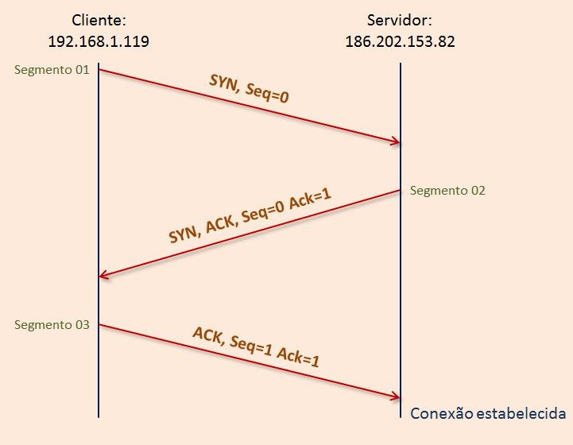
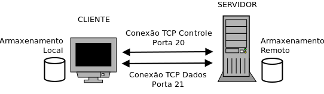
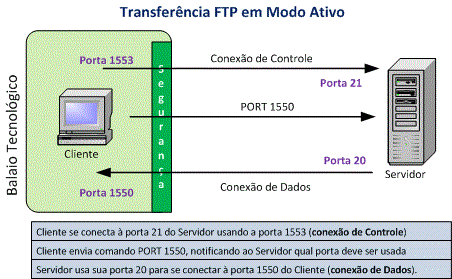
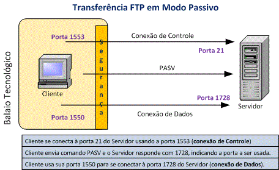

Uma sub-rede é uma subdivisão lógia de uma rede IP. Realizar a subdivisão de uma rede grande em redes menores permite diminuir o tráfego de rede, simplificar a administração e aumentar a performance dessa rede.
Os hosts que pertencem a uma sub-rede são endereçados com um grupo de bit mais significativo comum e idêntico em seus endereços IP. Assim ocorre uma divisão lógica do IP em dois campos, um endereço de rede (prefixo de roteamento) e um endereço (identificador) de host. Esse endereço de host identifica uma interface de rede específica.
Em computação, máscara é um dado utilizado para realizar operações de lógica binárioa, no geral em campos de bit. Ao utilizarmos uma máscara, um ou mais bits em um byte (ou outro agrupamento de bits) pode ser ativado, desativado ou ter seu valor lógico invertido, dependendo da operação lógica aplicada.
As operações lógicas mais comuns aplicadas em máscaras são as operações AND, OR, NOT e XOR.
Uma máscara de sub-rede tem a função de identificar em um endereço IPv4 qual porção representa o endereço e rede e qual porção representa o endereço de host. A máscara se assemelha a um endereço IPv4, ou seja, possuí 4 bytes divididos por pontos em porções de 8 bits (octetos). A parte dos bits constituída por valores "1" representa qual parcela de um endereço IP serão vistos omo endereço de rede e os bits que são todos zeros, representam o endereço de host.
É usada para dizer aos sistemas finais (incluindo roteadores e outros hosts) na rede quantos bits do endereço IP são usados para a identificação da rede e da sub-rede. Esses bits são chamados de Prefixo de Rede Estendido. Os bits restantes identificam os hosts dentro da sub-rede.
Os bits da máscara que identificam o número de rede (e sub-rede) são ajustados em 1 e os bits do host, e 0. Assim,. trata-se de uma máscara de bit que, quando aplicada por meio deu ma operação lógica AND em um endereço IP na rede, retorna o endereço de rede (prefixo de roteamento) ou de sub-rede.
Um endereço IPv4 possui dois componentes (ou partes), que são o endereço de rede e o endereço de host. O endereço de rede identifica toda a rede, de modo que todos os hosts dentro dessa rede possuem a mesma sequênia de bits nessa parte. Já o endereço de host identifica a conexão a um host (equipamento) em particular, ou ainda uma interface de rede da máquina, e é exclusivo de cada host dentro da rede à qual pertence.
A máscara de sub-rede pé o endereço especial que efetua a separação entre essas partes. Ela pode ser padrão, quando trabalhamos com redes classful (com divisão em classes) ou ser calculada com base euma rede sem classes (CIDR).
Existem máscaras de sub-rede padrão para cada classe de endereçamento, como podemos ver na tabela a seguir:
| Classe de Endereçamento | Máscara de Sub-Rede | Endereço Inicial | Endereço Final |
|---|---|---|---|
| A | 255.0.0.0 | 0.0.0.0 | 127.255.255.255 |
| B | 255.255.0.0 | 128.0.0.0 | 191.255.255.255 |
| C | 255.255.255.0 | 192.0.0.0 | 223.255.255.255 |
Portanto, se for utilizado um esquema de endereçamento de rede com classes, basta aplicar a máscara correspondente para efetuar a identificação de rede e host dentro da rede.
Resumidamente, onde está o 255 na máscara é onde está o endereço da rede, e no 0 está o endereço do host.
É possível ainda dividir a porção do endereço de host em uma sub-rede e novos endereços de host, caso seja necessário.
A máscara de sub-rede efetua tal separação do IP por meio de uma operação lógica AND bit-a-bit entre um IP e a máscara utilizada. Veja o exemplo a seguir:
192.168.1.61255.255.255.0A qual rede pertence esse IP? Convertendo os endereço par binário, obtemos:
11000000.10101000.00000001.0011110111111111.11111111.11111111.00000000Aplicando a operação lógica AND bit a bit:
11000000.10101000.00000001.0011110111111111.11111111.11111111.0000000011000000.10101000.00000001.00000000O endereço obtido corresponde à porção de rede do endereço IP (11000000.10101000.00000001.00000000). Convertendo esse endereço de volta para o decimal, obtemos o endereço 192.168.1.0, que é o endereço da rede a qual pertence o IP, note o final 0 o endereço, em vez de 61, que é o número que identifica o host dentro dessa rede.
Dentro de uma rede, dois endereços são especiais e nunca devem ser atribuídos a um host. São eles o endereço da rede em si, terminando em 0 (primeiro endereço, 192.168.1.0), e o endereço de broadcast, terminado em 255 (último endereço, no exemplo, seria o endereço 192.168.1.255). Assim, essa rede terá a capacidade para até 254 hosts, mais os endereços de rede e de broadcast, totalizando 256 endereços.
Vejamos agora um segundo exemplo de aplicação de máscara de sub-rede, agora sem o uso de classes do endereçamento IP:
192.168.1.61255.255.255.224PS: Com essa máscara, ele não está na classe C e em nenhuma outra.
Convertendo os endereço par binário, obtemos:
11000000.10101000.00000001.0011110111111111.11111111.11111111.11100000Aplicando a operação lógica AND bit-a-bit:
11000000.10101000.00000001.0011110111111111.11111111.11111111.1110000011000000.10101000.00000001.00100000O endereço obtido corresponde à porção de rede do endereço IP (11000000.10101000.00000001.00100000). Convertendo esse endereço de volta para decimal obtemos o endereço 192.168.1.32, que é o endereço da rede à qual pertence o IP. Note o final 32 do endereço, que fará com que essa rede acomode um número menor de hosts do que se fosse usada a máscara padrão (precisamente 30 hosts, mais rede e broadcast). O primeiro IP válido dessa sub-rede será o endereço 192.168.1.33.
Como são usados 27 bits para representar a porção de rede/sub-rede, também podemos representar essa rede omo 192.168.1.32/27, na notação CIDR.
A divisão em sub-redes é o processo de divisão de uma grande rede IP em múltiplas redes menores, com o propósito de aumentar sua performance, organização e segurança. Neste caso, deixamos de usar as máscaras padrão de classes e passamos a usar um esquema denominado CIDR (Classless Inter-Domain Routing), no qual a máscara a ser utilizada deve ser calculada de acordo com o endereço de rede original (a ser dividido) e o número de sub-redes ou hosts desejados.
O cálculo de máscaras de classe C é feito pela quantidade máxima de hosts (256) subtraído pelo outro número (no caso, 128, 192, 224, 240, 248 e 252), depois subtrai mais dois (o endereço da rede e o de broadcast). Por exemplo:
256
-224
32
-2
30
Da mesma forma, podemos fazer cálculos com outras classes e IPs.
A notação CIDR basicamente é onde tem os primeiros números 1 em binário na porção de rede da máscara, por exemplo, a máscara 255.0.0.0 tem a notação /8, a máscara 255.255.0.0 tem a notação /16 e a máscara 255.255.255.0 tem a notação /24. Numa aplicação em outra máscara, a notação muda (como a máscara 255.255.255.224 tem a notação /27).
Assim, eliminamos e endereçamento por classes e conseguimos aprimorar a agregação de rotas.
O protocolo TCP é um protocolo orientado a conexão. Isso significa que, antes que qualquer dado possa ser enviado entre dois hosts, uma conexão deve ser estabelecida entre eles. Vamos estudar o processo pela qual uma conexão TCP é estabelecida entre dois hosts em uma rede.
O handshake (significa algo como "aperto de mão") funciona assim: O Tx (computador transmissor) envia uma mensagem contendo apenas um nº de sequência (seq) a e o bit SYN ativado. O Rx (computador receptor) responde com um pacote contendo um nº de sequência b, nº ACK = seq a + 1 e os bits SYN e ACK ativados. O Tx, ao receber esse pacote, envia uma mensagem de confirmação ACK de volta ao Rx, com o nº ACK = seq b + 1. A conexão está assim estabelecida.
Quando nossa máquina requisita a conexão remota através do protocolo TCP à um servidor na net, ela envia o bit SYN com o número da sequência (no caso 0), e o servidor responde com o ACK (com 1), e uma outra sequência (SYN) também vinda a partir do 0, que volta à nossa máquina, que envia outro ACK (com 1) e o seq dela com 1.
Veja o esquema gráfico da máquina, logo abaixo:
Para estabelecer uma conexão TCP, após a troca dos três segmentos entre os hosts, o processo de estabelecimento de conexão está completo. Chamamos a esse processo de handshake de três vias (three-way handshake). O host que envia o primeiro segmento SYN realiza uma abertura de conexão ativa. O outro host (servidor que recebe o segmento SYN), realiza uma abertura de conexão passiva.
Quando a conexão é estabelecida, após o processo do handshake de três vias ter sido concluído, a conexão estará estabelecida e os host podem começar a trocar dados entre si. Ao final da comunicação, será necessário realizar um processo relativamente similar para a finalização da conexão.
O File Transfer Protocol (FTP), é um protocolo para transferência de arquivos entre dois hosts (um cliente e um servidor), baseado em conexão IP e usando TCP. Desenvolvido em meados dos anos 70 para suportar compartilhamento de arquivos em redes TCP/IP e mais antigas. É um protocolo da camada de aplicação TCP/IP. O FTP está definido na RFC 959.
O FTP usa conexão de dados e controle separadas, as portas usadas são a 20 e 21, os dados são transferidos pela porta 20, e a porta 21 transmite informações de controle.
Veja a imagem de como funciona ele:
Clientes podem se autenticar por meio de um nome de usuário e senha, ou ainda usar conexão anônima (se o servidor o permitir). É possível proteger o nome de usuário e senha usando SSL/TLS, na forma de FTPS, ou ainda, usando SFTP (SSH File Transfer Protocol).
Um modo de conexão determina como a conexão de dados é estabelecida. O cliente cria uma conexão TCP a partir de uma porta aleatória com a porta 21 do servidor FTP. FTP pode operar em dois modos: Ativo ou Passivo.
No modo ativo, o cliente escuta conexões de dados que chegam do servidor em uma porta informada. O servidor inicia um canal de dados a partir de sua porta 20. Problemática se o cliente estiver atrás de um firewall ou roteador NAT.
Veja abaixo como funciona o modo ativo:
Só que essas portas aleatórias podem ser bloqueadas pelo firewall, por este não saber que se trata de uma porta segura pra conexão. Nesse caso usamos o modo passivo.
No modo passivo, o cliente usa a conexão de controle para enviar um comando PASV ao servidor e recebe um endereço IP e número de porta aleatória como respostas, que serão usados para iniciar um canal de dados a partir de outra porta aleatória no cliente. Usada geralmente quando o cliente não consegue receber conexões TCP de entrada, como por exemplo, por conta de um firewall na rede.
Veja abaixo como funciona o modo passivo:
Nesse caso, o cliente envia através de uma porta aleatória, se conecta a porta 21 do servidor, que responde por essa mesma porta, que está com a conexão aberta, informando qual porta aleatória (outra porta) que deverá ser usada por ambos para transferência, de forma que o firewall não bloqueie.
Quando os dados são transferidos pela rede, podem ser usados dois tipos prinipais de representação de dados:
Além disso, existem outros dois modos de representação de dados disponíveis:
Os dados podem ser transferidos de três modos:
Um servidor pode oferecer o serviço de FTP anônimo, no qual os usuários se loguem com uma conta de nome anonymous, sem o emprego de senha (o servidor muitas vezes pede o e-mail do usuário como "senha", porém, nenhuma verificação é realizada). No geral, é empregada por servidores que armazenam atualizações de softwares para os clientes baixarem.
Sobre a segurança do FTP, ele não foi projetado para ser um protoocolo seguro, e está sujeito a diversos tipos de ataques, como ataques de força bruta, captura de pacotes, spoofing, entre outros. Além disso, o FTP não criptografa os dados transmitidos, incluindo nomes de usuários e senhas. Isso pode ser remediado usando-se uma versão segura do FTP, como o FTPS, ou ainda transmitindo os dados FTP por meio de um túnel SSH ou uma VPN (mais comum).
Vários protocolos foram derivados a partir do conceito do FTP, melhorando diversos aspectos, principalmente a segurança. Os mais utilizados são os seguintes: FTPS, SSH FTP, TFTP e SFTP. Além disso, existem muitos outros modos de transferência de arquivos não baseados em FTP, como as redes P2P (como as de torrent).
Podemos instalar também softwares de clientes de FTP. Um cliente de FTP é um software que se conecta a um servidor para requisitar a transferência de arquivos, tanto em download quanto em upload. Os clientes FTP podem ser em linha de comandos ou aplicações gráficas, ou mesmo web. Um software conhecido de FTP é o Filezilla.
Para utilizar um servidor FTP via linha de comando, digite ftp. Dentro do FTP, digite open nomedoservidor.com.br. Ele pedirá o login e a senha, caso estejam configurados no servidor. Dentro do FTP podemos utilizar comandos do Unix. Para upar arquivos usamos o comando put "/caminhodoarquivo", para baixar arquivos usamos get "nomedoarquivo" e para encerrar a conexão usamos bye.
A camada de transporte da pilha TCP/IP, intermediária entre as camadas de Aplicação e Internet, é responsável por funções de comunicação entre processos de computadores diferentes. Desta forma, as aplicações podem enviar e receber dados entre si.
Na pilha TCP/IP, os dois principais protocolos da camada de transporte são o protocolo TCP (Transmission Control Protocol) e o protocolo UDP (User Datagram Protocol).
Esses são os tipos de conexão:
| TCP (Transmission Control Protocol) | UDP (User Datagram Protocol) |
|---|---|
| Orientado a conexão. Os dispositivos envolvidos precisam estabelecer uma conexão antes de transmitir dados (com handshake). | Não orientado a conexão. Os dispositivos envolvidos não precisam estabelecer uma conexão antes de transmitir dados (sem handshake). |
| Para aplicações que requeiram alta confiabilidade, com tempo de transmissão não muito crítico, como envio de e-mails e download de arquivos. | Para aplicações que necessitem de transmissão de dados rápida e eficiente, como streaming de vídeo e jogos online. |
| Os pacotes de dados são organizados em uma ordem específica. | Não há ordem específica para os pacotes de dados. Se for necessária, a ordem deve ser gerenciada pela camada de aplicação. |
| Confiável, pois garante a entrega dos dados ao destino com mecanismos de correção de erros e retransmissão de dados. | Não confiável, pois a entrega de dados ao destino não pode ser garantida. |
| Possui mecanismos de verificação de erros sofisticados e recuperação de erros. | Mecanismo de verificação de erros básico, com checksum apenas, sem recuperação de erros. |
| Mais lento que o UDP, devido ao overhead do seu cabeçalho e rotinas de conexão/desconexão envolvidas. | Mais rápido que o TCP, mais simples e eficiente. |
| Pacotes perdidos podem ser retransmitidos, evitando assim perda de dados. | Pacotes perdidos não são retransmitidos. |
| Cabeçalho de tamanho variável, de 20 (padrão) a 80 bytes (com todas as opções). | Cabeçalho de tamanho fixo e pequeno: 8 bytes. |
| Não suporta broadcasting de dados. Protocolo para comunicação entre dois endpoints. | Suporta broadcasting de dados (e multicasting também). |
| Usado por protocolos como HTTP, FTP, SMTP e HTTPS. | Usado pelos protocolos DNS, DHCP, ANMP, RIP e TFTP. |
| Realiza controle de fluxo (não envia mais pacotes do que o destinatário consegue receber). | Não realiza controle de fluxo. |
| Doze campos. | Quatro campos. |
Os 12 campos do TCP são esses:
Já os 4 campos do UDP são esses: